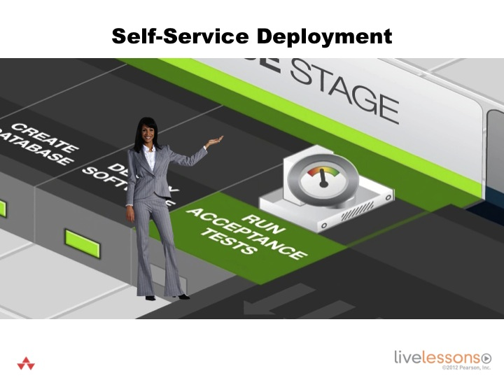

            <div class="container-fluid">
                <div class="row">
                    <div class="col-lg-12 col-xs-12">
                    <!-- Main Body Content -->
                    <h2 class="page-title bg-primary">6.5 - Self-Service Deployment</h2>
                   <!-- inner body -->
                <div class="inner-body panel">
                    <h4 class="sub-heading">Learning Objectives</h4>
                    <p>By the end of this lesson you will be able to -</p>
                    <ul class="edited-ul">
                        <li>Configure and execute a self-service deployment.</li>
                    </ul>
                       </div>  
                     </div>
                     </div>
                 </div>
                    <!-- inner body ends here -->
                <!-- container-fluid start here -->
                <div class="container-fluid">        
                    <div class="row">
                        <div class="col-xs-12 col-md-12">
                            <h4 class="bg-info secondary-header">Self-Service Deployment
</h4>
                        <div class="text-center">
                            
                        </div>
                        </div>
                </div>
            </div>
            <!-- container-fluid ends here -->
                <!-- container-fluid start here -->
                <div class="container-fluid">        
                    <div class="row">
                        <div class="col-xs-12 col-md-12">
                         <h4 class="bg-info secondary-header">Self-Service Deployment</h4> 
                            <div class="inner-body panel">
                                <ul class="ul-listed">
                                     <li>Deploy using the <strong>Self-Service Deployment</strong> job.</li>
                                    <li>Select Configure and have it <strong>Build other projects</strong> using the <strong>Transient</strong> job. This ensures that team members get full access to the environment, but the environment has a short life span - such as 24 hours.</li>
                                </ul>
                            </div>
                        </div>
               		 </div>
            <!-- container-fluid ends here --> </div> 
       <!--  main div box close here--> </div>
    <!-- Page Content Wrapper--> </div>
<!-- /#wrapper -->